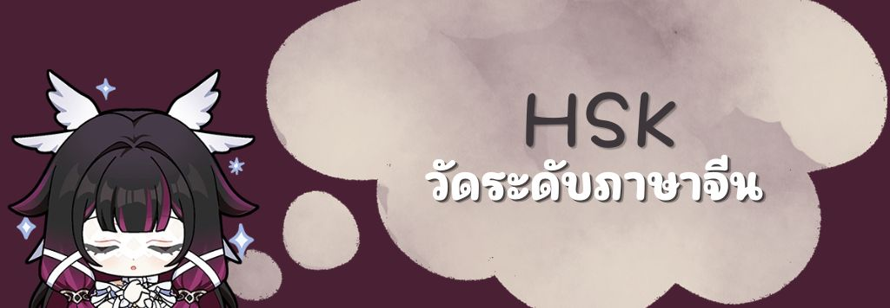
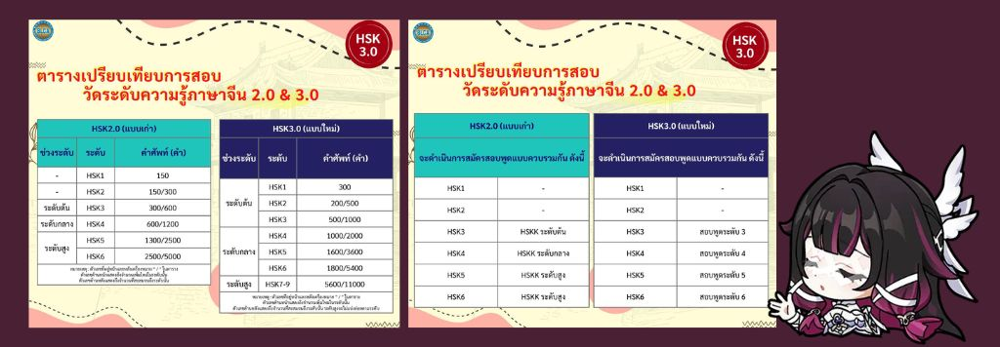

HSKกับการวัดระดับภาษาจีน

พอเริ่มเรียน พอเริ่มรู้จัก ก็เริ่มตกหลุมรัก
พอตกหลุมรัก ก็อยากรู้จักเขาเยอะ ๆ ใช้มั้ยคะ
ใช่ค่ะ เขานั้นคือ ภาษาจีน โดยทางจีนเองก็มีระบบสอบสำหรับคนที่อยากรู้ว่าเราพูดจีนอ่านจีนฟังจีนได้มากน้อยแค่ไหนอย่างระบบ
HSK
ย่อมาจาก (Hànyǔ Shuǐpíng Kǎoshì, 汉语 水平 考试)
HSK เป็นการสอบวัดระดับความรู้ภาษาจีนระดับสากลสำหรับ ชาวต่างชาติที่ใช้ภาษาจีนเป็นภาษาที่สองเพื่อวัดความสามารถในการนำภาษาจีนไปใช้ในชีวิตประจำวัน เรียน หรือทำงาน จัดขึ้นโดยสำนักงานเผยแพร่ภาษาจีนระหว่างประเทศ สาธารณรัฐประชาชนจีน
หากเปรียบกับภาษาอังกฤษ การสอบ HSK ก็เปรียบเสมือนการสอบระดับสากล อย่าง TOEFL และ IELTS ที่สถาบันศึกษา มหาวิทยาลัย รวมถึงบริษัทหลายแห่งในโลกให้การยอมรับ และสำคัญอย่างมากกับการเรียนต่อในต่างประเทศ
สรุปสั้น ๆ ว่า ผลสอบวัดระดับ HSK สามารถนำไปยื่นสมัครเรียนต่อ สอบชิงทุนการศึกษา สมัครงาน ฯลฯ สำหรับการเรียนต่อมหาวิทยาลัยในจีน
ถ้าคุณไม่อยากเสียเวลาเรียนปูพื้นฐานใหม่ ทางออกเดียวคือการสอบ HSK ให้ได้ระดับเท่ากับหรือมากกว่าที่คณะหรือมหาวิทยาลัยต้องการเท่านั้น
(ส่วนใหญ่ทางมหาวิทยาลัยต้องการอย่างน้อย HSK 4 ทั้งนี้ขึ้นอยู่กับแต่ละคณะอีกด้วยนะคะ)
แล้วเราจะรู้ได้ยังไงว่าระดับไหนสูงสุดต่ำสุด ระดับนี้มีความหมายว่าอะไร ทางเราพร้อมชี้แจงให้กระจ่างค่ะ
โดยแบ่งออกเป็นทั้งหมด 6 ระดับ แบ่งตามความยากง่ายและคลังคำศัพท์ตั้งแต่ 150 คำ จนถึง 5,000 คำ ผู้สอบสามารถเลือกสอบในระดับที่ต้องการได้ ไม่จำเป็นต้องเริ่มสอบตั้งแต่ระดับที่ 1
HSK ระดับที่ 1 : ผู้สอบเข้าใจคำศัพท์และประโยคจีนง่าย ๆ ได้ การสอบ HSK ระดับที่ 1 ไม่เป็นที่นิยมเท่าไรนัก ในกลุ่มผู้ที่เรียนภาษาจีนมาแล้ว ดังนั้นจึงค่อนข้างเป็นระดับที่สอบเพื่อวัดความรู้ตนเองเสียมากกว่า
HSK ระดับที่ 2 : ผู้สอบสามารถใช้ภาษาจีนสื่อสารเรื่องง่าย ๆ ในชีวิตประจำวัน โดยส่วนมากผู้ที่มีพื้นฐานภาษาจีนหรือเคยเรียนภาษาจีนมาก่อนแล้ว มักเริ่มสอบ HSK ที่ระดับที่ 2 หรือ 3 ขึ้นไป
HSK ระดับที่ 3 : ผู้สอบสามารถใช้ ภาษาจีนติดต่อสื่อสารในชีวิตประจำวัน การเรียน หรือในด้านการทำงานขั้นพื้นฐาน และสามารถใช้ในการเดินทางท่องเที่ยวในประเทศจีนได้ มหาวิทยาลัยและทุนการศึกษาที่ต้องการผลสอบระดับที่ 3 อาทิ ทุนการศึกษาหนึ่งภาคเรียน (ภาษาและวรรณคดีจีน) สถาบันขงจื่อ, หลักสูตรปริญญาตรี หลักสูตรภาษาจีนสำหรับนักศึกษาต่างชาติ มหาวิทยาลัยเทียนจิน (Tianjin University), หลักสูตรปริญญาตรี มหาวิทยาลัยครุศาสตร์เซี่ยงไฮ้ (Shanghai Normal University)
HSK ระดับที่ 4 : ผู้สอบสามารถในการใช้ภาษาจีนสื่อสารได้ในวงกว้าง และสามารถใช้ภาษาจีนสื่อสารกับเจ้าของภาษาได้อย่างคล่องแคล่ว ในการสมัครเข้ามหาวิทยาลัยที่มีชื่อเสียงในประเทศจีนสามารถยื่นเรียนคณะวิทยาศาสตร์, วิศวกรรม, เกษตร , การแพทย์ และอื่น ๆ จะต้องผ่านระดับ 4 อาทิ ทุนการศึกษาสำหรับนักเรียนต่างชาติ มหาวิทยาลัยแพทย์คุนหมิง (Kunming Medical University), หลักสูตรปริญญาตรี คณะวิศวกรรมซอฟแวร์ ภาคภาษาอังกฤษ มหาวิทยาลัยปักกิ่งเจียวทง (Beijing Jiaotong University), ทุนการศึกษาหนึ่งปีการศึกษา (ภาษาและวรรณคดีจีน) สถาบันขงจื่อ
HSK ระดับที่ 5 : ผู้สอบสามารถในการอ่านนิตยสารภาษาจีน รับชมและเข้าใจรายการโทรทัศน์ของจีน และสามารถใช้ภาษาจีนในการพูดสุนทรพจน์ได้ มหาวิทยาลัยและทุนการศึกษาที่ต้องการผลสอบระดับที่ 5 อาทิ คณะบริหารธุรกิจ บัญชีและการเงิน ภาคจีน มหาวิทยาลัยจี้หนาน (Jinan University), ทุนการศึกษาสำหรับอาจารย์เพื่อการสอนภาษาจีน สถาบันขงจื่อ
HSK ระดับที่ 6 : ผู้สอบสามารถฟังและอ่านข่าวสารภาษาจีนได้เป็นอย่างดี รวมถึงใช้ภาษาพูด ภาษาเขียนในการแสดงความคิดเห็นได้อย่างคล่องแคล่ว มหาวิทยาลัยที่ต้องการผลสอบระดับที่ 6 อาทิ หลักสูตรปริญญาโท มหาวิทยาลัยภาษาและการค้าต่างประเทศกวางตุ้ง (Guangdong university of foreign studies)
HSK- แล้วที่สำคัญคือ เร็ว ๆ นี้กำลังจะมี HSK 3.00 ซึ่งเป็นระบบใหม่ค่ะ จากระดับ 1-6 จะเป็น 1-9 เพิ่มขึ้นมาสามระดับ และมีการปรับปรุงเพิ่มคำศัพท์ในแต่ละระดับอีกด้วย
โดยมีตารางเปรียบเทียบ
จากเว็บสถาบันทางภาษาและวัฒนธรรม กรุงเทพ ที่เป็นผู้จัดการทดสอบ HSK ในแต่ละครั้ง ดังนี้ค่ะ

มีกำหนดการเริ่มใช้HSK ระบบ 3.00 ในวันที่ 13 ธันวาคม 2569 ค่ะ
อย่าลืมดูระบบก่อนลงสมัครสอบนะคะ ว่าที่สอบเป็นระบบเก่าหรือระบบใหม่